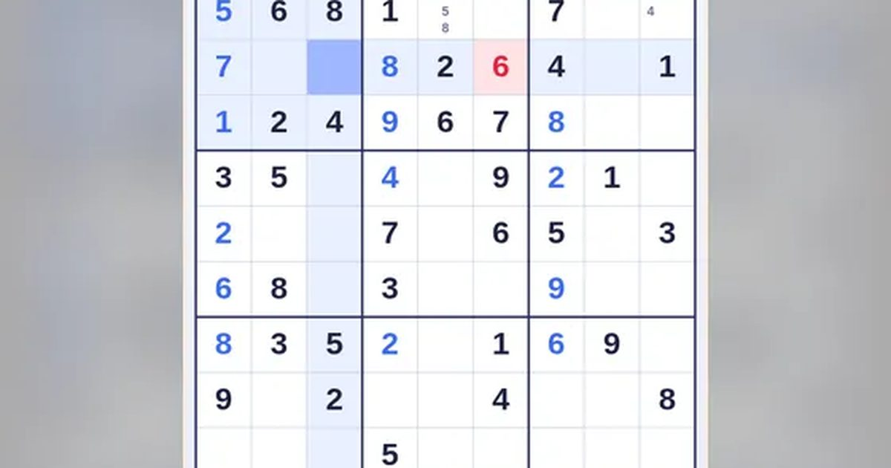

스도쿠
Sudoku
퍼즐 · 숫자무료설치 없음폰 · PC
▶ 지금 바로 하기로그인 없이 브라우저에서 바로 시작돼요
어떤 게임인가요?
가로줄·세로줄·굵은 3×3 칸마다 1부터 9까지 한 번씩만 들어가게 빈칸을 채우세요. 메모·힌트 지원, 실수 3번이면 끝. 풀면 바로 다음 문제!
목표 · 가로줄·세로줄·굵은 선 3×3 칸마다 1부터 9까지 숫자가 한 번씩만 들어가도록 빈칸을 모두 채우세요.
이렇게도 찾아요
스도쿠 게임숫자 퍼즐무료 스도쿠스도쿠 쉬움sudokufree sudokusudoku easy
#스도쿠 #숫자퍼즐 #두뇌게임 #치매예방
게임 방법
- 빈칸을 누른 뒤 아래 숫자 버튼을 눌러 채워요.
- 같은 줄·같은 칸에 이미 있는 숫자는 들어갈 수 없어요. 모든 문제는 답이 하나뿐이에요.
- 틀린 숫자는 빨갛게 표시되고 실수 1번. 실수 3번이면 끝.
- 메모 모드에서는 후보 숫자를 작게 적어 둘 수 있어요. 숫자를 맞히면 관련 메모가 자동으로 지워져요.
- 힌트는 문제마다 3번. 정답 하나를 채워 줘요.
- 다 채우면 점수를 받고 바로 다음 문제로. 빨리 풀수록 보너스, 실수·힌트는 감점.
등장하는 것들
- 검은 숫자 · 처음부터 있던 숫자
- 파란 숫자 · 내가 채운 숫자
- 빨간 숫자 · 틀린 숫자
- 같은 숫자 강조 · 고른 숫자와 같은 칸
공략 팁
- 한 줄에 빈칸이 하나뿐인 곳부터 채우세요.
- 숫자 하나를 골라 9개 3×3 칸을 차례로 훑어 보세요.
- 막히면 메모로 후보를 적고, 후보가 하나뿐인 칸을 찾으세요.
 틀린 그림 찾기
틀린 그림 찾기 딱지치기
딱지치기 포탄 대작전
포탄 대작전 1 to 50
1 to 50 한방 벽돌깨기
한방 벽돌깨기 별빛 편대
별빛 편대